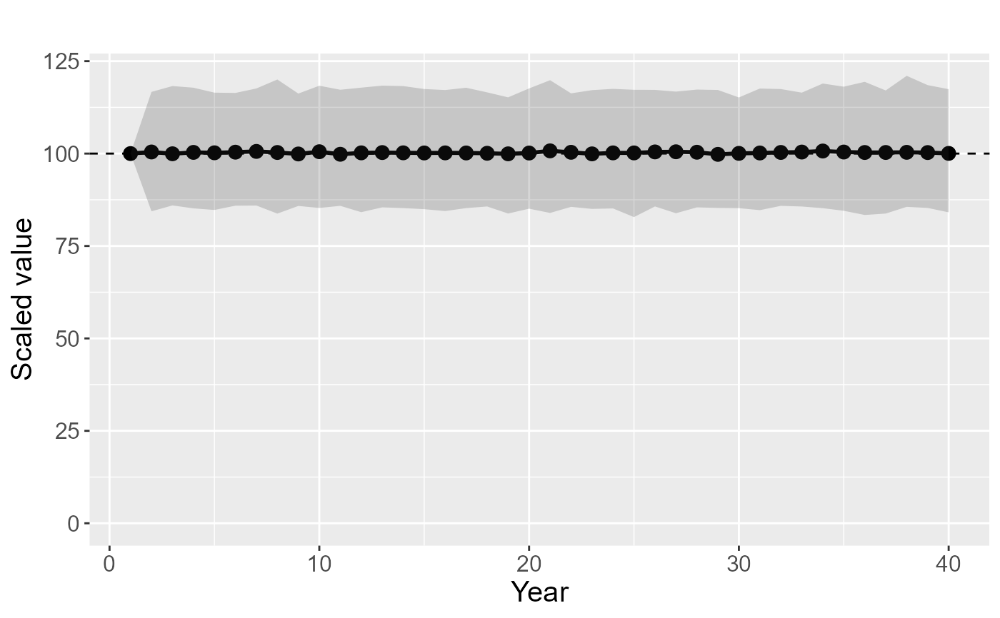

Rescale species values for indicator using Lambda interpolation
Source:R/lambda_indicator.r
lambda_indicator.RdThis function takes in the output from a sparta occupancy model or a three dimensional array. The first year is set to an index value for all species and the average change across years for each species is used to calculate the indicator. A species only contributes to the dataset in years where the standard deviation across iterations meets the sd threshold. Missing years in the middle a a species dataset are filled in using interpolation.
Usage
lambda_indicator(
input,
index = 100,
threshold_sd = 0.2,
threshold_Rhat = 1.1,
threshold_yrs = 20,
upperQuantile = 0.975,
lowerQuantile = 0.025,
sample_size = NULL,
year_range = NULL,
region = NULL
)Arguments
- input
Either a string giving the path to occupancy model output files produced by sparta, or a three dimensional array [species, year, iteration].
- index
The index value for the first year, defaults to 100.
- threshold_sd
The threshold standard deviation for a species-year value to be included. If the standard deviation is above this value it is removed.
- threshold_Rhat
The threshold Rhat value for a species-year value to be included. If the Rhat is above this value it is removed. This rule will only be used when
inputis a path to sparta output.- threshold_yrs
Numeric, the minimum number of years that a species must fulfill the threshold_sd for it to be included.
- upperQuantile
The upper confidence interval to use (as a probability)
- lowerQuantile
The lower confidence interval to use (as a probability)
- sample_size
numeric, if not NULL then a subsample of the iterations are used, equal to the number given. This is useful when datasets are so large that memory starts to become limiting.
- year_range
numeric vector of length 2 giving the start and end year of the data to be analysed.
- region
Specify the region or aggregate data for which the indicator will be produced (for example: ENGLAND, WALES, SCOTLAND). The region name should match the name used when running occDetFunc. If NULL (default) the function will be run on the full data (psi.fs).
Value
A list with five elements: a summary (data.frame), the LogLambda values (a three dimensional array, species - year - iterations), calculated after removing species that fail thresholds and including interpolation, the raw indicator value (a value for each iteration in each year), the average annual percentage change for each species (the fist year is ignored as change is 0), and a table giving the 'good' years for each species as defined by the thresholds. Please note that the number of species contributing to the first year is 0 as this is fixed to the index value.
Examples
### Running from an array ####
# number of species
nsp = 50
# number of years
nyr = 40
#number of iterations
iter = 500
# Build a random set of data
myArray <- array(data = rnorm(n = nsp*nyr*iter,
mean = 0.5,
sd = 0.1),
dim = c(nsp, nyr, iter),
dimnames = list(paste0('SP',1:nsp),
1:nyr,
1:iter))
# Ensure values are bounded by 0 and 1
myArray[myArray > 1] <- 1
myArray[myArray < 0] <- 0
# Run the lambda_indicator method on this data
myIndicator <- lambda_indicator(myArray)
# Plot the indicator
plot_indicator(myIndicator$summary[,'indicator'],
myIndicator$summary[,c('lower' ,'upper')])

### Running from a directory of sparta ouput
# myIndicator <- lambda_indicator('myfilepath/myfolder')